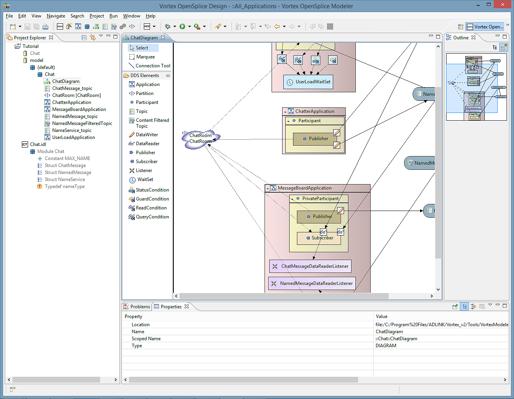

4. Modeler Described¶
This section describes the features and specialized tools available in Vortex OpenSplice Modeler, and outlines how to use them for modeling and assembling resources (such as DDS entities) as well as for generating DDS-compliant source code.
4.1. Overview¶
The Vortex OpenSplice Modeler is an integrated Eclipse-based tool chain based on DDS domain-specific model-driven techniques.
The Vortex OpenSplice Modeler modeling tool provides both Information and Application modeling:
- Information modeling includes the modeling of Types and Topics
- Application modeling includes the modeling of DomainParticipants, Publishers, Subscribers, DataWriters, DataReaders, Listeners, WaitSets and Conditions.
Future releases will also include Deployment modeling (a graphical deployment-control environment supporting real-time connectivity).

- A detailed example showing how to model a publisher-subscriber application is provided in the Tutorial. Readers should be familiar with the Vortex OpenSplice product, the OMG’s Data Distribution Service for Real-Time Systems Specification, Version 1.2, and the Eclipse IDE before reading these sections or using the Vortex OpenSplice Modeler.
4.1.1. The Vortex OpenSplice Modeler and Eclipse¶
Eclipse (http://www.eclipse.org) is an extensible, Open Source, Integrated Development Environment (IDE) for developing software.
The Vortex OpenSplice Modeler (also referred to simply as Modeler for convenience) is a set of plug-ins for Eclipse. The Vortex OpenSplice Modeler plug-in enables the model-driven development of the Information Model together with the software components (the Application Model) that operate on it. Distinguishing between information and application modeling allows a clear ‘separation of concerns’ for users. System architects can model the information and software engineers can model their applications on this model.
The Modeler can generate the source code and descriptors needed for any of the supported OpenSplice architectures and platforms.
4.2. The Modeler GUI¶
The Vortex OpenSplice Modeler Graphical User Interface (GUI) is composed of:
- views - panels within the GUI which provide information about the components which constitute the models.
- editing tools - editors which are used to create, manage, and modify the models and components.
- a Vortex OpenSplice Design Perspective - a collection of specific views, menus and editors which are particular to the Modeler plug-in.
The GUI elements are introduced below.
4.2.1. Eclipse Workbench and Perspectives¶
The Workbench is the Eclipse main window and working area. The Workbench contains the editors and views that are used to develop, modify and view your software project and its components (see Vortex OpenSplice Design Perspective and Example Project).
A Perspective defines what actions are available in the Eclipse menus and tool bars as well as arranging the available editors and views. A Perspective’s views can be customized to suit individual needs. Any number of Perspectives can be open at one time, but only one is visible at a time. The Perspective Switch icon, located in the upper right-hand corner of the Workbench, is used to change the currently displayed perspective.
4.2.1.1. The Vortex OpenSplice Design Perspective¶
The Vortex OpenSplice Design Perspective is an Eclipse perspective containing the views, menus and editors needed by users to perform tasks within the Modeler.
The Vortex OpenSplice Design Perspective
- is displayed when using the Vortex OpenSplice Modeler
- populates the Menu and Tool Bars with OpenSplice-specific items.
The Vortex OpenSplice Design Perspective with an open project, editors and Outline View is shown below.
Vortex OpenSplice Design Perspective and Example Project
{kind=link}
The Vortex OpenSplice Design Perspective contains the views listed below. These views can be seen in the illustration above.
- Project Explorer (located on the left-hand side of the Workbench) - This view shows all of the Vortex OpenSplice and other Eclipse projects loaded in the Eclipse Workbench, with their contents.
- Editor Area (located in the centre of the Workbench) - This area is where all editors are displayed. More than one editor can be loaded into the editor area: they are accessed by clicking the tabs appearing along the top of the editing area. The specialized Modeler editors are described in detail in the section Specialized Editors.
- Outline (located along the right-hand side of the Workbench) - This view shows an outline of the component or entity being edited in the current editor. Selecting a component in the Outline will change the focus in the editor to that component. This is useful for finding a component in a diagram when the diagram too large to fit within the visible area of the editor. Various types of outline can be shown, including hierarchical and zoomable thumbnail views of the editor contents: the type of outline(s) available depends on the editor being used.
- Properties View (located at the bottom of the Workbench) - The Properties View displays an object’s properties: the object can be selected in either the Project Explorer or in an editor.
- Problems View (located at the bottom of the Workbench) - The Problems View displays all Problem Markers on all resources in the users Workspace, including errors and warnings in Vortex OpenSplice projects.
4.3. Creating and Using a Vortex OpenSplice Project¶
A Vortex OpenSplice project contains the components and entities that are used to generate the source code and interfaces for Vortex OpenSplice-based DDS applications.
The following basic steps describes how to create a Vortex OpenSplice project.
Step 1
Open the Create a Vortex OpenSplice Project wizard, by
- choosing File > New > Vortex OpenSplice Project from the Menu Bar
OR
OR
- right-clicking in the Project Explorer window to display the pop-up menu, then choosing New > Other > Vortex OpenSplice Project (see New Vortex OpenSplice Project dialog and New Vortex OpenSplice Project.).
{kind=link}
Step 2
Enter a name for the project into the Project Name text box (in the Create a Vortex OpenSplice Project wizard). The Location text box shows where the project will be saved: you can change the location if desired, however the Use Default Location check box must be cleared before the Location text box can be edited.
Click the Finish button to create your new project.
Your newly-created project should appear in the Project Explorer window (located on the left-hand side of the Eclipse Workbench). The project will contain a single Vortex OpenSplice Model called model. The model will contain the global or default module, appearing as default in the Project Explorer view.
The project, complete with its basic file structure, will be saved to the location specified in the Location text box of the Create a Vortex OpenSplice Project wizard.
A project’s contents can be displayed in the Project Explorer
window by clicking the expansion icon  appearing at the
left of the project name.
appearing at the
left of the project name.
New Vortex OpenSplice Project dialog
{kind=link}
New Vortex OpenSplice Project
{kind=link}
Step 3
Add all of the DDS entities, Modeler components and resources that are needed for your DDS software application.
Steps 3 through 5 can be done in any order, using the Diagram Editor or Project Explorer.
A diagram is just one specific view on the model: it does not necessarily show all model components and/or relationships. Consider the model a UML diagram, for example: one diagram can be used to clarify the inheritance relationships without showing the attributes of the objects, while another shows exactly the same objects with attributes and associations to other objects.
Accordingly, components that are in the diagram are always in the model, but components in the model do not need to be in the diagram.
Step 4
Set each DDS entity’s properties and QoS policy values as needed.
Step 5
Create Diagram component(s). Use the Diagram Editor to assemble your projects entities into a model of your software application in the diagram components. This model will be used to generate your project’s source code and interfaces.
Step 6
Generate the DDS source code using your completed Vortex OpenSplice project model.
Step 7
Implement your application’s interfaces (using the generated class names).
Creating different versions of your application can easily be done by simply re-using the generated DDS code (created in Step 6), then writing different implementations of the interfaces.
Step 8
Compile your software application using your chosen compiler.
4.4. Project Components¶
Vortex OpenSplice projects consists of components. The project components include:
- Generic Components - items which are used by the modeling
tool to contain and structure the software project’s DDS
entities and include
- Diagrams - graphically model the software project’s structure, entities and properties, as well as defining the associations between the entities
- Modules - a container for other components or elements within the model
- QoS Sets - sets containing QoS policy instances which can be associated with one or more Application Modeling Components; QoS sets can also be associated with one or more Information Modeling Components [1]
- Specialized Editors - these include editors which are used to create and modify the Diagram and QoS Set components
- Resources - directory folders, files, or other items which are used by the project
- Information Modeling Components
- IDL Type - the specification (or definition) of the information that will be used or transmitted by the application (as a data type) [2]
- Topic - a DDS entity which provides the most basic description of the data to be published and subscribed to
- Content Filtered Topic - a DDS entity that is a specialization of ‘TopicDescription’ that allows for content-based subscriptions
- Application Modeling Components
- Application - In the context of Vortex OpenSplice Modeler, an application is a deployable software component that uses DDS for the distribution of information. An application is associated with a set of entities, which determine the incoming and/or outgoing information as well as how the information is obtained and or published.
- DomainParticipant - contains and associates DDS entities such publishers and subscribers; represents the local membership of the application in a domain
- Publisher - responsible for data distribution: it publishes data types using a DataWriter
- Subscriber - responsible for receiving published data and making it available to the receiving application
- DataWriter - used by the application to communicate with a Publisher
- DataReader - used by the application to communicate with a Subscriber
- Partition - a logical partition for associating matching topics between Publishers and Subscribers
- Listeners - a mechanism for the Vortex OpenSplice middleware to asynchronously alert the application of the occurrence of relevant status changes
- WaitSets - a mechanism for the Vortex OpenSplice middleware to synchronously alert the application of the occurrence of relevant status changes
- Conditions - objects which filter the status changes that applications are advised of
The project’s components are displayed as a hierarchical tree in the Project Explorer: higher level items contain lower level or dependent items. For example, the Model component (which is the top-level entity for all projects in the tool) contains Modules, which contain Applications, which in turn contain DomainParticipants.
All project components have properties which can be displayed in the Properties panel. The Properties view is located in the bottom section of the Workbench.
If the Properties view is not visible, then choose Window > Show View > Properties from the Menu Bar to display the panel.
4.4.1. Component Descriptions¶
The following table provides detailed descriptions of the project components listed above. These components are used for creating project applications and are added to projects from either the Project Explorer, by using the Eclipse File > New menu dialogs and pop-ups or by using a specialized editor (see Specialized Editors).
Detailed Descriptions of Modeler’s Project Components
| Generic Components | |
|---|---|
| Diagram | This is a graphical representation of the project’s model and is a main component of a modeling project. Diagrams:
|
| Module | A module is used to provide a logical separation for users. It can be used to package items together that are related, in order to improve the readability. A module in the Modeler is like a package in UML. |
| QoS Set | A Modeler component which contains the set of QoS policy instances which can be associated with one or more modeled DDS entities. |
| Resources | Directory folders, files, or other items which are used by the project. |
| Information Modeling Components | |
|---|---|
| IDL Type, Data Type | The specification (or definition) of the information that will be used or transmitted by the application (as a data type). |
| Topic | A Topic is a DDS entity which provides the most basic description of the data to be published and subscribed. A Topic is identified by its name, which must be unique in the whole DDS Domain. It fully specifies the type of the data that can be communicated when publishing or subscribing to the Topic. |
| Content Filter Topic | A DDS entity that is a specialization of ‘TopicDescription’ that allows for content-based subscriptions. Based on an existing topic, the ContentFilteredTopic allows DataReaders to subscribe to a subset of the topic content. |
| Application Modeling Components | |
|---|---|
| Application | An application is a Modeler component that uses DDS to publish information or subscribe to information. An application contains or helps to organise related DDS entities. DDS entities are:
Applications will only communicate with each other if they publish or subscribe from or to the same Topic and their mutual sets of QoS policies are compatible. Developers should refer to the OMG’s DDS Specification to ascertain the appropriate settings for the relevant QoS policies. Note that the Partition QoS is shown separately as the Partition building block. |
| DomainParticipant | A DDS entity, needed by all DDS applications, which holds and associates DDS entities such publishers and subscribers. Developers should refer to the OMG’s DDS Specification for the complete description. |
| Publisher | This is responsible for data distribution; it publishes data types using a DataWriter. |
| Subscriber | This is responsible for receiving published data and making it available to the receiving application. |
| DataWriter | This is used by the application to communicate to a Publisher. |
| DataReader | This is used by the application to communicate to a Subscriber. |
| Partition | This is a logical partition for associating matching topics between Publishers and Subscribers and represents a Partition QoS policy. Publishers and Subscribers connect to one or more Partitions. The Partition is shown as a separate building block (in the Diagram Editor) |
| Listener | A mechanism for the Vortex OpenSplice middleware to asynchronously alert the application of the occurrence of relevant status changes, such as a missed deadline, violation of a QosPolicy setting etc. |
| WaitSet | A mechanism for the Vortex OpenSplice middleware to asynchronously alert the application of the occurrence of relevant status changes, such as missed deadlines, violation of a QosPolicy setting etc. WaitSets allow application threads to wait until one or more of the attached Condition objects have a trigger value of TRUE or until a specified timeout expires. |
| GuardCondition | A GuardCondition is a specific Condition whose trigger value is completely under the control of the application. The purpose of a GuardCondition is to provide the means for an application to manually wake a WaitSet. |
| StatusCondition | Entity objects that have status attributes also have a StatusCondition. StatusConditions can be set to monitor various communication statuses of the Entity which are enabled by setting a status mask. When attached to a WaitSet, a StatusCondtion causes the WaitSet to trigger when one or more of the enabled status attributes becomes TRUE. |
| ReadCondition | ReadCondition objects are associated with a DataReader and provide an alternative communication style between the Data Distribution Service and the application (in other words, wait-based rather than notification-based). A ReadCondtion allows a DataReader to specify the data samples it is interested in by specifying the desired sample-states, view-states and instance-states. A ReadCondition object can be used on its own to read from a DataReader or it can be attached to a WaitSet. When attached to a WaitSet a ReadCondition causes the WaitSet to trigger when data is available which satisfies the settings of the ReadCondition. |
| QueryCondition | QueryCondition objects are specialized ReadCondition objects. A subset of an SQL expression can be used to allow the application to filter out newly arrived data, in addition to the notification of new arrivals. |
All of the components shown in the table can be added to a project by following the steps shown below. The Diagram Editor (see Diagram Editor and Diagrams) can also be used to add the components to the project.
Step 1
Select (click on) the project’s name located in the Eclipse Project Explorer panel.
Step 2
Either
- choose File > New > <item> from the Eclipse Menu Bar
OR
- right-click on the project name and choose New > Other > Vortex OpenSplice > <item> from the pop-up dialog
where <item> is the name of the required component or resource, for example Module. This opens a pop-up dialog for adding details about the new component.
Step 3
Provide details about the new component in the pop-up dialog’s text boxes, including the component’s intended root (the parent or container that the component is to be added to), the component’s name, plus any other requested information. Click Next or Finish to add the component (after providing all requested details).
Components are context- and container-sensitive: they can only be added to the appropriate parts of a project or other components.
Components are context- and container-sensitive: they can only be added to the appropriate parts of a project or other components.
4.5. Specialized Editors¶
Certain modeling components, including Diagrams and QoS Sets (see Component Descriptions) are created and/or edited using the Modeler’s specialized editors: the QoS Set Editor (QoS Set Editor and QoS Sets) and Diagram Editor (Diagram Editor and Diagrams).
The editors are displayed in the Workbench’s centre panel and are opened by:
Step 1
Locating the component to be edited in the Project Explorer.
Step 2
Right-clicking the component, then clicking on the required editor when it is displayed in the pop-up dialog that appears.
OR
Double-clicking the component or its parent (container).
The use of these specialized editors is described in QoS Set Editor and QoS Sets and Diagram Editor and Diagrams.
 More than one editor can be open at one time, but only one
editor is visible at a time. Each editor can be displayed by
clicking on its tab (displayed along the top of the Workbench’s
centre panel).
More than one editor can be open at one time, but only one
editor is visible at a time. Each editor can be displayed by
clicking on its tab (displayed along the top of the Workbench’s
centre panel).
4.5.1. QoS Set Editor and QoS Sets¶
A QoS Set is a set of Quality of Service policies and associated values [3] . A Qos Set can be assigned to a particular DDS entity or it may exist as an independent set within a module.
A QoS Set is added to a module by:
- choosing File > New > QoS Set from the Eclipse Menu Bar
OR
- right-clicking on the module and choosing QoS Set from the pop-up dialog
The QoS Set Editor is an editing tool specifically designed to quickly and easily add and set Quality of Service (QoS) policies.
The QoS Set Editor is opened by double-clicking on a QoS Set component, or right-clicking on it and then choosing Edit QoS Set from the pop-up menu.
The QoS Set Editor is a multi-page editor with three pages:
- The Overview page provides general information about the QoS Set (see QoSSet Editor and Overview page).
- The Edit QoS Policy Values page is used to manage and display the set’s QoS properties (see Edit QoS Policy Values page).
- The Edit Imported QoS Sets page page has facilities for managing imported QoS sets (see Edit Imported QoS Sets page).
The pages are opened by clicking on their tabs located along the bottom of the editor (see QoSSet Editor and Overview page).
Each page contains widgets that are specific to the page such as combo boxes, buttons and lists. The combo boxes are opened and closed by clicking on the icons located at the left of each list.
In addition to the page-specific widgets, there is also a Resultant QoS Set tree viewer; this widget is common to all pages. The Resultant QoS Set is the actual set of policies and values that will be assigned to the QoS Set’s owner, using both the current QoS Set and imported QoS Sets. The Resultant QoS Set is determined by an algorithm which compares the current QoS Set’s values with the values of its imported QoS Sets, then calculates which values should be used (see QoS Resultant Set).
4.5.1.1. Overview Page¶
The Overview page contains the following lists and information:
General Information - general information about the QoS set including its name, path (relationship with ancestor components) and name of its parent - the set’s owner
Imports - QoS sets which have been imported into this QoS set.
QoSSet Editor and Overview page
{kind=link}
4.5.1.2. Edit QoS Policy Values Page¶
The Edit QoS Policy Values page contains a QoS Policies list section and <Policy> Values section (in addition to the Resultant QoS Set list):
- the QoS Policies displays the list of QoS policies which users can alter the property values of
- the <Policy> Values section displays the properties and value for the policy, <Policy>, selected in the QoS Policies list.
The <Policy> Values section is only visible when a QoS policy is selected in the QoS Policies list.
Edit QoS Policy Values page
{kind=link}
4.5.1.2.1. Adding a QoS Policy¶
This process adds a QoS Policy to the QoS Policies list.
All appropriate QoS Policies already exist for the entity; however, only those QoS Policies which appear in the list are able to have their values changed or edited using the QoS Policy Values section.
Step 1
Click the Add button located at the right of the QoS Policies list. This displays the Add QoS Value dialog.
Step 2
Click the icon adjacent to the Type drop-down list. The list displays the policies which are appropriate for the entity that the QoS Set is assigned to. Scroll down the list of available policies to find and select the one required. Click the OK button when finished. The new policy will be added to the QoS Policies and Resultant QoS Set lists.
Step 3
Select the newly-added policy from the QoS Policies list (if it is not already selected). The properties and values for the selected policy will be displayed in the <Policy> Values list, where <Policy> is the policy’s name. The values and selection methods shown are specific to each policy type. Select and set the policy values by choosing them from the displayed drop-down lists, check boxes or text boxes.
The data types and values displayed for each policy are in accordance with the OMG’s DDS Specification. However, it is the developer’s responsibility to correctly select or set the values that are appropriate for the selected policy and component (entity) the QoS Set will be assigned to. It is recommended that reference is made to the DDS Specification when setting these values.
4.5.1.2.2. Removing a QoS Policy¶
Select the policy to be removed from the QoS Value list, then click the Remove button.
 The QoS policy still exists but it is removed from the QoS
Policies list and its properties are reset to their
default values.
The QoS policy still exists but it is removed from the QoS
Policies list and its properties are reset to their
default values.
4.5.1.2.3. Changing a QoS Property Value¶
A policy’s values can be changed if needed: select the policy from the QoS Policies list, then change the values which are displayed in the <Policy> Values section, where <Policy> is the policy’s name.
It is recommended that users refer to the DDS Specification to ensure that the values used for a policy are appropriate.
4.5.1.3. Edit Imported QoS Sets Page¶
The Edit Imported QoS Sets page contains an Imports list and Imported Set Detail section (in addition to the Resultant QoS Set list):
Imports displays an ordered list of the QoS sets which have been imported into the current QoS Set: sets can be added, removed and reordered.
The order that the QoS Sets are displayed in the Imports list is
used by the Resultant QoS Set to resolve conflicts and
determine the priority of each set’s policy values. The order is
changed using the Promote and Demote buttons.Imported Set Details - displays the Resultant QoS Sets for the selected imported sets.
This section is only visible when a QoS Set is selected from the
Imports section Imported Set Details.
Edit Imported QoS Sets page
{kind=link}
4.5.1.3.1. Importing a QoS Set¶
Step 1
Click the Add button located at the right of the Imports list. This displays the QoS Set Selection dialog.
Step 2
Click the expansion icons
adjacent to the project name and component containing the QoS Set you want to import. Expand the project-component tree until the desired QoS Set appears (see the Project Explorer tree shown in the QoSSet Editor and Overview page screen).
Step 3
Select the desired QoS Set, then click the OK button.
The newly-imported QoS set will appear in the Imports list and its details will appear in the Imported Set Details list.
4.5.1.3.2. Removing an Imported QoS Set¶
Select the required QoS Set from the Imports list, then click the Remove button.
4.5.1.3.3. Changing the Order of Imported QoS Sets¶
An imported QoS Set can be moved up or down the Imports list by clicking the Promote or Demote buttons, respectively. However, default QoS Sets and QoS Sets from a topic (datawriters and datareaders) can not be moved.
 The order that the QoS Sets are displayed in the Imports list is
used by the Resultant QoS Set to resolves conflicts and
determine the priority of each set’s policy values.
The order that the QoS Sets are displayed in the Imports list is
used by the Resultant QoS Set to resolves conflicts and
determine the priority of each set’s policy values.
4.5.1.4. QoS Resultant Set¶
A QoS Set can import other, stand-alone QoS sets. The imported sets are merged with the current set’s policy values to create a Resultant Set.
Strict rules of precedence are followed when computing the Resultant Set, since different QoS sets may contain duplicate values. Starting with an empty working set, values are merged to form the Resultant Set, where duplicate values overwrite values already in the working set and the steps are applied recursively:
- Merge the Resultant Set into the working set for each QoS set in the imports list.
- Merge the values into the working set to produce the final Resultant Set.
4.5.1.4.1. Default QoS Sets¶
The modeling tool contains default QoS Sets. The default QoS Sets contain all the values that are required for a particular entity. There are six hidden global default sets for each type of entity. DomainParticipants and Topics import this set as the first set in the imports list. The default QoS Set cannot be removed.
 The default QoS Set does not appear in the QoS Policies list.
The default QoS Set does not appear in the QoS Policies list.
The DomainParticipant also has an extra three default sets for the Subscriber, Publisher and Topic which contain the global default for the entity type and extend it. This is equivalent to the Vortex OpenSplice factory defaults. Subscribers and Publishers then inherit the default QoS set from their parent DomainParticipant (again restricted to being first in list and compulsory). Subscribers and Publishers contain extended default sets for DataReaders and DataWriters and their child DataReaders/Writers pick these default sets up.
DataReaders/DataWriters also by default inherit the topic’s QoS if they are connected to one. This is placed second in the imports list and it can be removed (this is equivalent to the optional copy_from_topic_qos() DDS method).
4.5.2. Diagram Editor and Diagrams¶
A project’s diagram is a graphical representation of the project’s Application Model (see the illustration Diagram Editor with Tool Palette and Example Components). A diagram is a main component of a modeling project.
The Diagram Editor and diagrams:
- perform the actual modeling of the project and it application(s)
- show the relationships of the project’s applications and associated elements
- are used to create components
- associate application components with each other, as required by the application
The Diagram Editor contains a tool palette and a canvas.
- The tool palette, located on the left-hand side of the
editor, contains a list of components and connection tools
(see
Diagram Editor with Tool Palette and Example Components).
The palette can be used to add components to the
model and create connection between components.
- Tools are selected by clicking on the tool in the palette; its associated component is added to the diagram by the clicking in the diagram’s canvas (see below).
- A tool can be de-selected by pressing the [Esc] key on the keyboard.
- The canvas, the large area located on the right-hand side of the editor, is where symbols representing the model’s component are placed and edited.
Components’ symbols appearing on the diagram can be ‘collapsed’ and ‘expanded’.
- Collapsing a component’s symbol reduces the symbol to a
simple box and hides the items it contain. This is useful for
hiding unwanted detail in the diagram.
- Collapse a symbol by clicking on the minus (‘-‘) icon located at the top-left corner of the symbol.
- The minus icon changes to an addition (‘+’) icon.
- Expanding a component’s symbol returns the symbol to its
normal size and shape revealing the items it contains.
- Expand the symbol by clicking on the addition (‘+’) icon located at the top-left corner of the symbol.
Diagram Editor with Tool Palette and Example Components
{kind=link}
4.5.2.1. Adding Components¶
Components which are added to the diagram using the Diagram Editor’s palette are added to the project’s model: they are automatically displayed in the Project Explorer (as well as on the canvas).
Components in the Project Explorer can be added to diagram by clicking on the component then dragging it from the Project Explorer to the diagram’s canvas. If the component is already displayed in the canvas, then rather than being duplicated, it will only be moved to the location where the mouse button is released.
Detailed instructions for adding components to the model are given in the section Application Modeling.
4.5.2.2. Deleting Components¶
Deleting a Modeler’s component or DDS entities removes it from the project.
Components that are deleted from Diagram Editor’s canvas are also deleted from the project’s model. There is NO UNDO function! Do not delete a component using the Diagram Editor unless you want to permanently delete it from the model.
It is strongly advised that the project be saved before deleting items.
However, an item can be removed from a diagram without deleting it from the project by right-clicking the item, then choosing Remove from the pop-up dialog.
A component or entity can be deleted by:
- right-clicking on it, then choosing the Delete option from the pop-up dialog
- selecting it in the Diagram, then choosing Edit > Delete from the Menu Bar
- selecting it in the Diagram, then pressing the [Shift]+[Delete] keys
 Pressing the [Delete] key when an entity is selected in a Diagram
will just remove the entity from the Diagram, but not actually
delete it.
Pressing the [Delete] key when an entity is selected in a Diagram
will just remove the entity from the Diagram, but not actually
delete it.
4.5.2.3. Renaming Components¶
Components and entities can be renamed in either the Project Explorer or Diagram Editor by:
Right-clicking on the component, then choosing the Rename option from the context menu.
Entering the desired name in the Name text box in the pop-up dialog, then clicking the Return button.
OR
The name of a component in the Diagram can be edited directly by double-clicking on the component.
Footnotes
| [1] | QoS sets are categorized under Generic Components for this reason. |
| [2] | The Data Type definitions are imported from IDL specifications written outside of the Vortex OpenSplice Modeler. The Vortex OpenSplice Modeler supports the generation of models from IDL files within the project (automatic) as well. Users can write and modify IDL alongside their models which will automatically be compiled into a splice model. |
| [3] | Refer to the OMG’s DDS Specification and the Vortex OpenSplice Language Reference Guides for explanations and descriptions of Quality of Service properties and their use. |

Table Of Contents
- 4. Modeler Described
- 4.1. Overview
- 4.2. The Modeler GUI
- 4.3. Creating and Using a Vortex OpenSplice Project
- 4.4. Project Components
- 4.5. Specialized Editors